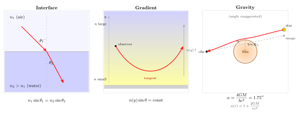

光为什么会弯曲 — 从折射到引力透镜?
上一节讲彩虹时, 我们已经见识过一次弯曲: 太阳光从空气进入水滴, 方向突变, 不同颜色偏折角不同, 于是红在外紫在内. 但折射并不是光弯曲的全部. 把一根筷子插进水杯, 它"折断"; 夏天走在柏油公路上, 远处出现"水面"的倒影; 日落时看起来还挂在地平线上的太阳, 按照几何位置其实已经落下去了半度; 爱因斯坦 1915 年更进一步预言, 一颗遥远恒星的光掠过太阳时, 也会被弯折 1.75 角秒 —— 并且在四年后被一次日食证实.
这四件事看起来毫不相干: 一件发生在水里, 一件发生在热空气里, 一件发生在大气里, 一件发生在真空里. 然而在物理上它们是同一件事的不同表现. 本节我们就沿着"弯曲"这个动作, 从界面折射一路走到引力透镜, 看看它们如何被同一条费马原理统一起来.
一、界面上的折射: 波前穿过一堵墙
最简单的光线弯曲发生在两种介质的界面上. 空气和水、空气和玻璃, 折射率 $n$ 在界面两侧是不一样的. 波前穿越这一跃变时, 波长变了, 方向也跟着变. 用最基本的斯涅尔定律描述:
$$ n_1 \sin\theta_1 = n_2 \sin\theta_2 \tag{1} $$
这里 $\theta_1, \theta_2$ 是入射光线和折射光线分别与界面法线的夹角. 这条公式在中学课本里是给出来的, 但它背后的物理非常干净: 波前的每一条波峰都是一条等相位线, 界面两侧的波长不同 ($\lambda_i = \lambda_0/n_i$), 要让波前在界面上仍然连续相接, 方向就必须改变一定角度, 使得界面上两侧波峰的间距相等. 这就是惠更斯 (Huygens) 1678 年给出的图像: 把每一点都看作新的子波源, 在界面下重新构造包络, 包络的方向自然满足 (1).
费马 (Fermat) 大约在同一时期给出了另一个等价的表述: 光在两点之间选择"光程"$\int n\,\mathrm{d}s$ 取极值的路径. 对界面折射, 对 $\theta$ 取变分, 得到的正是 (1). 这两条视角 —— 波前图像和变分原理 —— 后面会一路陪我们走到引力透镜, 所以先请读者把它们记牢.
一个常被忽略的细节: (1) 式里没有"弯曲半径", 界面折射是一个"瞬时的、零厚度的"方向跳变. 如果光只在两种均匀介质之间传播, 它在每一种介质里都走直线, 只在界面上拐一下. 这是最干净的一种弯曲, 也是我们下面要推广的基本单元.
二、连续梯度: 海市蜃楼与被抬高的太阳
现实里没有那么多锋利的界面. 夏天柏油公路贴地的一层空气被晒到 50 摄氏度以上, 再往上温度迅速回落到 30 度; 大气从地面到 10 公里高, 温度和密度也是连续变化的. 这些情形里折射率 $n$ 不是一跳而下, 而是一个连续的函数 $n(y)$, 其中 $y$ 是高度.
怎么处理这种"软界面"? 一个干净的做法是把连续梯度看成无穷多层薄薄的均匀介质, 每一层之间都是一个小斯涅尔跳变, 最后取极限. 这样得到的是一条平滑弯曲的光线. 直接的结果是: 光线总向折射率大的一侧弯曲.
解析地看, 对水平分层 $n = n(y)$, 在每一个小界面上应用 (1), 让入射角度 $\theta$ 从法线 (竖直) 量起, 就得到守恒量
$$ n(y)\,\sin\theta(y) = \text{常数} \tag{2} $$
这是大气光学里著名的 Bouguer 不变量. 它告诉我们: 当光线向下走进入 $n$ 大的区域时, $\sin\theta$ 就得减小, 也就是光线与竖直法线的夹角变小 —— 光线被"掰向竖直", 即向着 $n$ 增大的方向弯.
两个具体场景:
(a) 海市蜃楼. 柏油路面温度高, 贴地空气密度低, $n$ 小; 高处空气凉, $n$ 大. 按 (2), 一束从前方远处车辆斜着射向地面的光, 走到贴地层时 $\sin\theta$ 被迫增大, 直到 $\theta = 90°$ 时被掰回来, 再斜着上升到观察者眼里. 人眼顺着最后一段路径反推, 就以为前方路面下有一汪"水", 水里还有车辆的倒影 —— 这就是所谓"下蜃". 它看起来像水面反射, 其实是连续折射.
做一个粗估: 空气折射率 $n \approx 1 + 2.7\times 10^{-4}\cdot (\rho/\rho_0)$, 贴地与上方温度差若有 20 度, 密度差约 7%, 折射率差 $\Delta n \approx 2\times 10^{-5}$. 在高度 $h = 0.1$ m 的薄层里这已经足以把掠射光线 (初始 $\theta$ 接近 $90°$) 反弯, 形成看似水面般的伪反射. 数字虽小, 因为入射角几乎是掠射的, 临界条件 $\sin\theta_c = (n_{\mathrm{hot}}/n_{\mathrm{cool}})$ 很容易满足.
(b) 大气折射抬高的太阳. 地球大气密度随高度下降, $n(y)$ 是一个从 $\approx 1.00028$ (地面) 到 $1$ (真空) 的单调衰减. 沿着 (2), 从外太空斜着进入大气的星光一路向下弯, 使得我们看到的"视位置"比真实几何位置高. 对日出日落时的太阳 (即视高度 0° 时), 这个抬升大约是 35 角分, 即 0.58°, 超过太阳本身的角直径 (约 32 角分). 换句话说, 当我们看到"太阳下缘压地平线"那一刻, 真正的太阳已经整个落到地平线以下了. 这是大气把它"托"出来的 0.5° 视觉礼物.

三、真空里的弯曲: 引力透镜与等效折射率
到此为止, 所有的弯曲都能用"介质"解释. 但 1915 年爱因斯坦发现了一件令人不安的事: 即便是真空, 只要有质量, 光线也会弯曲. 把一束远处恒星的光让它掠过太阳边缘 (冲激参数 $b = R_\odot$), 它偏离原方向的角度是
$$ \alpha = \frac{4GM}{bc^2}. \tag{3} $$
代入太阳数字: $G = 6.674\times 10^{-11}\,\mathrm{N\,m^2/kg^2}$, $M_\odot = 1.989\times 10^{30}\,\mathrm{kg}$, $R_\odot = 6.96\times 10^8\,\mathrm{m}$, $c = 3\times 10^8\,\mathrm{m/s}$. 分子 $4GM_\odot \approx 5.31\times 10^{20}$, 分母 $R_\odot c^2 \approx 6.26\times 10^{25}$, 相除得 $\alpha \approx 8.48\times 10^{-6}$ rad. 换算成角秒 (1 rad = 206265"), 大约是 $\alpha \approx 1.75$ 角秒. 这是一个非常小的角度 —— 相当于 200 米外一根头发的粗细 —— 但当时已经接近天文观测的极限.
光为什么会被真空里的质量弯折? 广义相对论的回答是: 真空不是真的"空", 质量改变了时空的几何, 让原本"直"的测地线看起来在弯. 不过对弱场 (比如太阳附近), 我们可以用一个非常启发性的语言: 时空的曲率等效于一个折射率. 具体地, 对球对称的 Schwarzschild 时空, 弱场近似下光在径向距离 $r$ 处有等效折射率
$$ n(r) = 1 + \frac{2GM}{rc^2}. $$
把它代入我们熟悉的费马原理 $\delta\int n\,\mathrm{d}s = 0$, 对一条掠过质量 $M$、冲激参数 $b$ 的直线做微扰积分, 就能恢复 (3) 式 —— 而且系数正是 $4GM/(bc^2)$, 包含了两个相等的贡献: 一个来自空间部分的弯曲, 一个来自时间分量. 这两份贡献各给 $2GM/(bc^2)$, 加起来就是 4 倍.
这句话非常漂亮: 第二节里大气折射把太阳抬高 0.5°, 用的是 $n(y) \approx 1 + 2.8\times 10^{-4}\cdot e^{-y/H}$; 现在把 $y$ 换成 $r$, 把 $2.8\times 10^{-4}$ 换成 $2GM/(rc^2)$ (对太阳边缘大约 $4.2\times 10^{-6}$), 同一条费马原理就给出了 1.75". 弯曲的机制不同, 可弯曲的数学是一样的.
四、牛顿的一半与 Eddington 的 1919: 一次判决性的实验
爱因斯坦不是第一个预言引力偏折光的人. 早在 1804 年 Soldner 就按牛顿力学算过: 把光当作以 $c$ 飞行的粒子, 让它在太阳引力场里走过双曲线轨道, 也能得到一个偏折值. 做这个计算不难 —— 它就是卢瑟福散射公式的一个特殊情形. 结果是
$$ \alpha_{\mathrm{Newton}} = \frac{2GM}{bc^2}, $$
恰好是广义相对论值的一半. 代入太阳边缘的数字, 牛顿给 0.875 角秒, 爱因斯坦给 1.75 角秒. 两者相差整整 2 倍.
为什么差两倍? 我们做一次"极限检验". 牛顿计算只考虑了空间上的"引力吸引", 相当于只用了度规里的时间分量 ($g_{tt}$) 部分; 广义相对论在此之外还有一份来自空间分量 ($g_{rr}$) 弯曲的贡献. 在静止质点上, $g_{rr}$ 的贡献被 $v^2/c^2$ 压低、可以忽略; 对光, $v = c$, 这份贡献就和时间项一样大 —— 两份加起来, 2 变 4. 同一套数学, 区别只在于"是否承认空间本身也在弯".
这意味着: 一次 0.875" 与 1.75" 之间的测量, 能直接判决牛顿和爱因斯坦谁对. 机会出现在日食 —— 只有在月亮挡住太阳盘面的那几分钟, 才可能看到紧贴日轮的恒星. 1919 年 5 月 29 日, 英国天文学家 Arthur Eddington 带一队人去西非普林西比岛, 另一队在巴西索布拉尔, 同时拍摄日食期间太阳附近的恒星场, 再和半年后同一片天区的"夜间"照片对比, 测量恒星的视位置偏移. 最后两地报告的偏折角分别落在 1.61" ± 0.40" 和 1.98" ± 0.12" —— 与爱因斯坦的 1.75" 相符, 与牛顿的 0.875" 相去甚远. 次日《泰晤士报》头版刊出 "科学革命: 牛顿的宇宙被推翻", 爱因斯坦从一个苏黎世的理论物理教授变成世界名人.
这次实验在精度上其实勉强 —— Eddington 之所以坚持做, 部分是信念 (他早就相信广义相对论), 部分是机遇 (一次大战刚结束, 日食路径恰好经过英属殖民地). 但它是方法论上的典范: 一个两倍的差异, 一次日食, 判决了两种引力理论. 今天用甚长基线干涉 (VLBI) 观测类星体被太阳遮挡前后的视位置偏移, 已经能把 $\alpha$ 测到和广义相对论预言相符到 $10^{-4}$ 的精度.
偏折角公式 (3) 在更强的引力场里还有更戏剧性的后果. 如果把 $b$ 不断减小, $\alpha$ 就增大, 当 $b$ 降到 $b_c = 3\sqrt{3}\,GM/c^2$ 时, 光会绕一圈、两圈、$n$ 圈后再出来 —— 这是黑洞附近的"光子环", 2019 年事件视界望远镜 (EHT) 拍到的那张 M87* 黑洞照片里, 包围阴影的那一圈亮环, 就是这件事的直接图像. 另一个极端是弱场里大量弱偏折的叠加: 一个前景星系团可以让背景星系被拉成弧形, 甚至在几何对称时形成一圈完整的 "爱因斯坦环". 同一条公式, 从弱到强, 从角秒到戏剧, 一路都通.
小结
这一节我们把"光的弯曲"从筷子插进水杯里, 一路推到太阳边缘的星光偏折. 表面看到的三种弯曲机制 —— 界面一次跳变、连续介质里的光程梯度、时空曲率本身 —— 在数学上都能写成费马原理 $\delta\int n\,\mathrm{d}s = 0$ 的极值问题; 差别只在 $n$ 从哪里来. 在水和玻璃里, $n$ 来自电子极化; 在大气和热空气里, $n$ 来自分子密度梯度; 在真空中, $n$ 来自 $2GM/(rc^2)$, 也就是时空几何本身. 1919 年 Eddington 的日食判决了牛顿的 0.875" 和爱因斯坦的 1.75", 让我们第一次相信: 时空真的会弯, 光是它最忠实的测量者. 回到大问题"光是什么": 光在这里不再是一根直线或一束波包, 而是一把几何的尺子 —— 它所走的每一条路径, 都在告诉我们它所穿过的时空的形状. 下一节我们会从另一个角度追问界面: 为什么光在一块玻璃上会同时透射和反射, 为什么掠射角时水面变成镜子 —— 菲涅尔会给我们答案.
▲